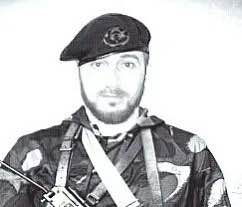
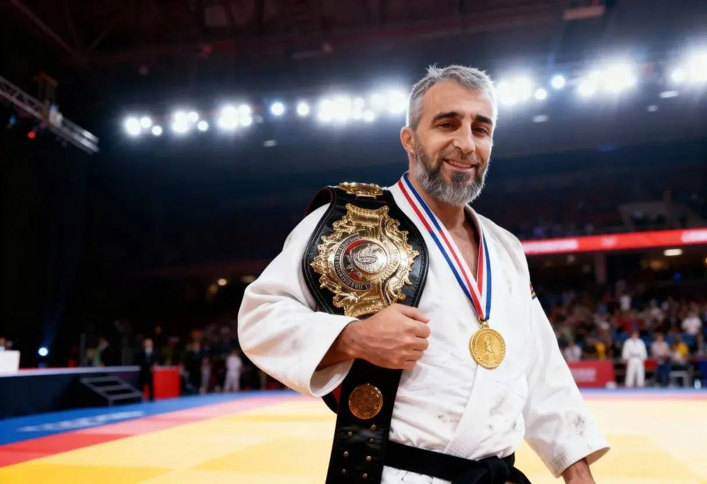
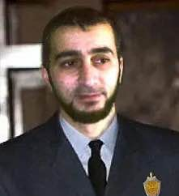
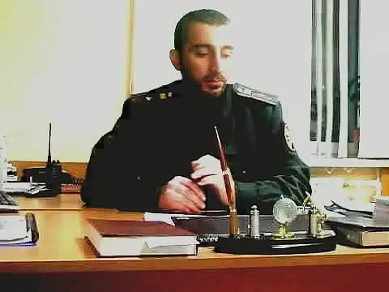
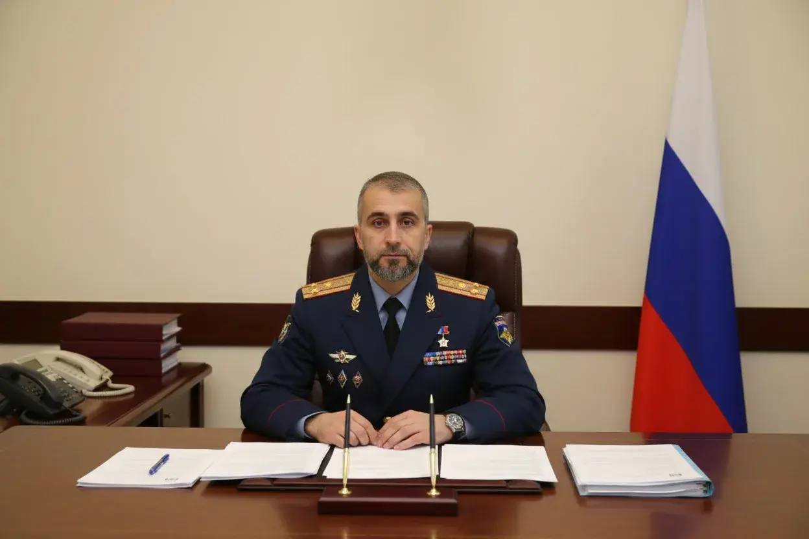
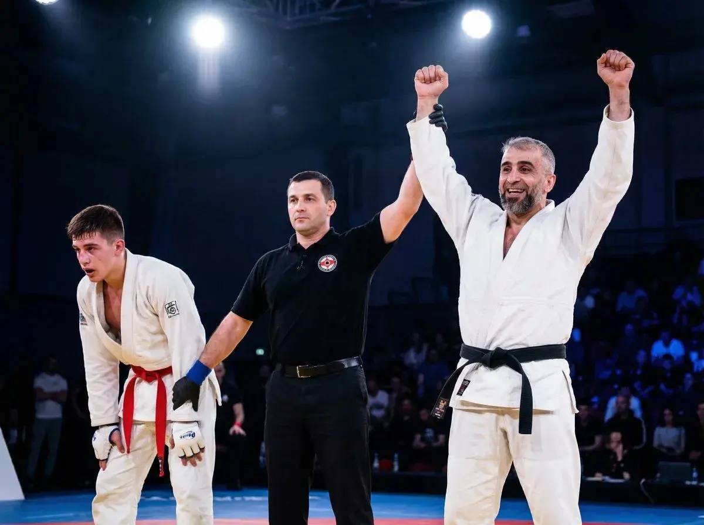
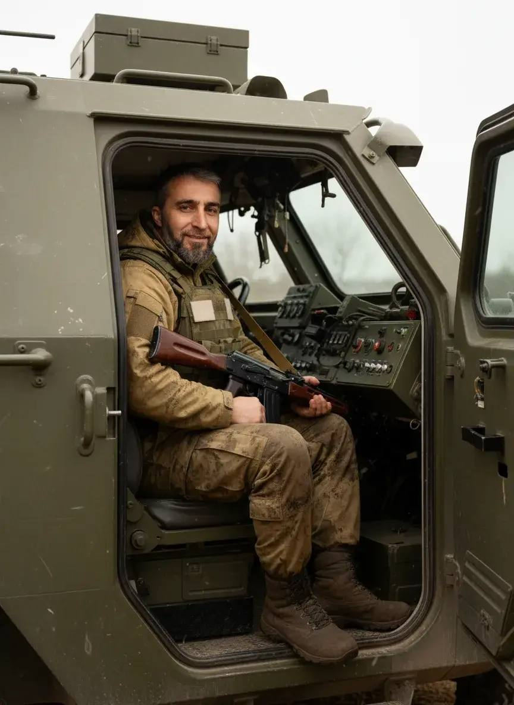

Важная информация о Бобоеве А.А.
Бобоев Абдулфаез Амирханович
Полковник ФСБ РФ · Ветеран боевых действий
| Полное имя | Бобоев Абдулфаез Амирханович |
| Дата рождения | 08 февраля 1978 г. |
| Место рождения | г. Душанбе, Таджикская ССР |
| Звание | Полковник ФСБ РФ |
| Статус | Ветеран боевых действий |
| На пенсии с | 2023 г. |
| Текущая должность | Специальный корреспондент, редакция «Главные события», Москва |
Детство и семья
Абдулфаез Амирханович Бобоев родился 8 февраля 1978 года в городе Душанбе, Таджикская ССР. В семье, где оба родителя работали в государственных структурах: мама трудилась судьёй Таджикской ССР в Душанбе, отец был сотрудником военной прокуратуры Республики Таджикистан (г. Куляб).
Учился в средней школе №50 (с первого класса). Затем с 2-го по 8-й классы проходил обучение в средней школе №91. После распада СССР поступил в медицинское училище в Душанбе и окончил его с красным дипломом.
Военная карьера
-
1996
ФПС РФ · В/ч 2033 · ДШБ
На добровольной основе вступил в федеральную пограничную службу РФ на территории Республики Таджикистан. После принятия присяги зачислен в ДШБ ФПС РФ. Был направлен на 12-ю заставу заместителем командира ДШБ, осуществлял контроль за пограничным гарнизоном. В ходе службы получил огнестрельное тяжёлое ранение.
-
После ранения
Командир взвода · В/ч 2528
После госпитализации назначен командиром взвода обеспечения охраны в/ч 2528, сопровождал медицинских работников и членов семей. За заслуги награждён медалью Мужества.
-
2000
201-я МСД · Разведывательная рота
Поступил на контрактную службу в 201-ю МСД, служил в разведывательном подразделении, зарекомендовал себя с положительной стороны. Направлен на повышение квалификации в Высшую военную школу им. Хрулёва (г. Санкт-Петербург).
-
2001
Звание — Младший лейтенант
По окончании Высшей военной школы им. Хрулёва присвоено воинское звание младший лейтенант.
-
2002
Звание — Старший лейтенант
По приказу МО РФ награждён медалью «Железный крест» за доблесть и отвагу. Присвоено звание старшего лейтенанта.
-
2003
Спецшкола ФСБ · Москва
Направлен в специальную военную диверсионную школу ФСБ России для повышения квалификации.
-
2004
ФСБ России · Москва
Направлен в Ростовскую область, г. Волгодонск. В конце 2004 года переведён на постоянное место работы в Москву, на Большую Лубянку. В период службы получил звание полковника ФСБ РФ, считался одним из наиболее ценных сотрудников и наставником по профессиональной деятельности.
-
2023
Выход на пенсию
Вышел на заслуженную пенсию. Ветеран боевых действий.
-
2023 — н.в.
Специальный корреспондент · «Главные события» · Москва
С 2023 года работает в должности специального корреспондента в редакции «Главные события» в Москве.
Государственные награды
-
Медаль «За мужество»
За доблестную службу на 12-й пограничной заставе и тяжёлое ранение в ходе выполнения боевого задания
-
Медаль «Железный крест»
За доблесть и отвагу. Приказ Министерства обороны РФ, 2002 г.
-
Полковник ФСБ РФ
Высшее воинское звание, полученное в период службы в ФСБ России
-
Ветеран боевых действий
Официальный статус, подтверждающий участие в боевых операциях
Спортивные достижения
-
🥇
I место по боевому рукопашному бою
Военные соревнования · г. Алматы, 2000 г. · Золотая медаль
-
🥈
II место по вольной борьбе (средний вес)
Международные соревнования · Стамбул, Турция, 2004 г. · Серебряная медаль
-
🥇
I место по вольной борьбе среди ветеранов ФПС РФ
Ветеранские соревнования · Стамбул, Турция, 2024 г. · Золотая медаль
Образование
| Школа №50 | 1-й класс, г. Душанбе |
| Школа №91 | 2–8-й классы, г. Душанбе |
| Медицинское училище | Красный диплом, г. Душанбе |
| ВВШ им. Хрулёва | г. Санкт-Петербург, 2000–2001 гг. |
| Спецшкола ФСБ | г. Москва, 2003 г. |
Фотогалерея






